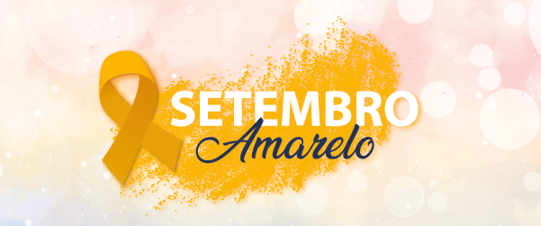

A história por trás do símbolo
O mês foi escolhido porque o dia 10 de Setembro é tido internacionalmente como o Dia Mundial de Prevenção do Suicídio. A data tornou-se símbolo da luta desde 1994, quando Mike Emme, um jovem de 17 anos, cometeu suicídio nos Estados Unidos. Após a tragédia, seus pais distribuíram fitas amarelas em seu funeral, em referência a um automóvel Mustang 1968, que o jovem havia restaurado.
Essa ação simbólica deu origem ao Programa de Prevenção ao Suicídio Fita Amarela, que anos depois foi trazido ao Brasil, já em 2015, pela Associação Brasileira de Psiquiatria em colaboração com o Conselho Federal de Medicina, com o objetivo de aumentar a conscientização sobre a saúde mental.
|